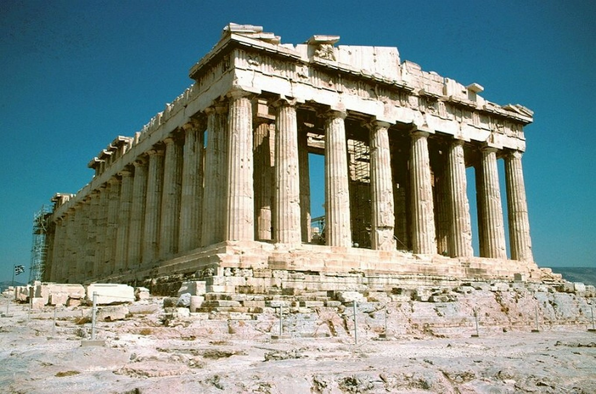
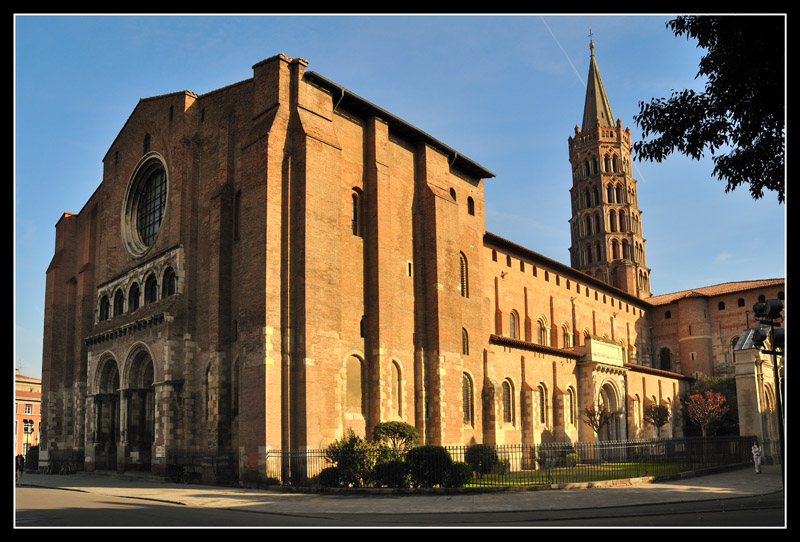
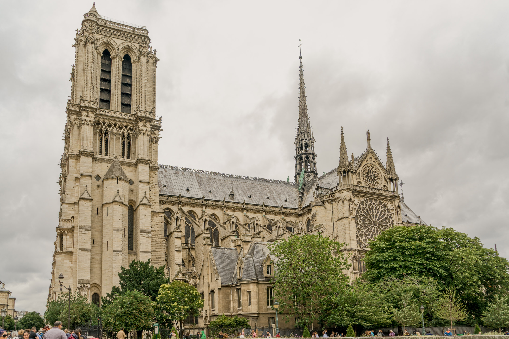
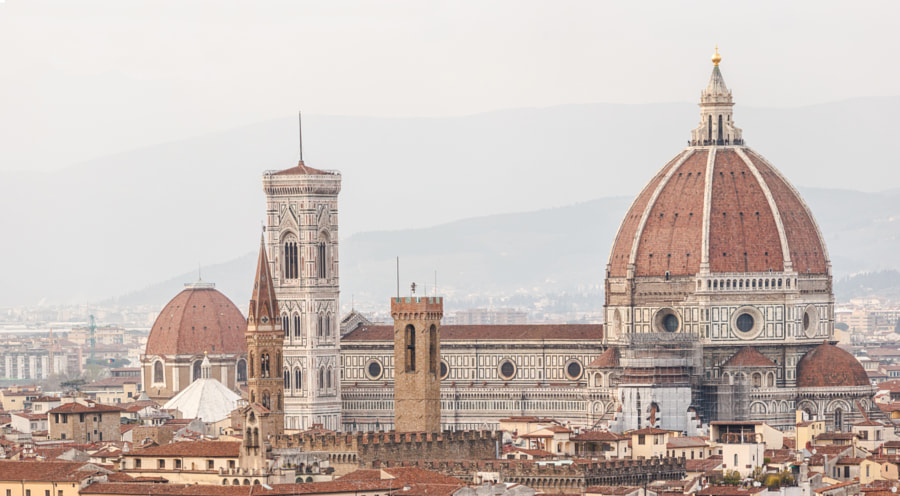
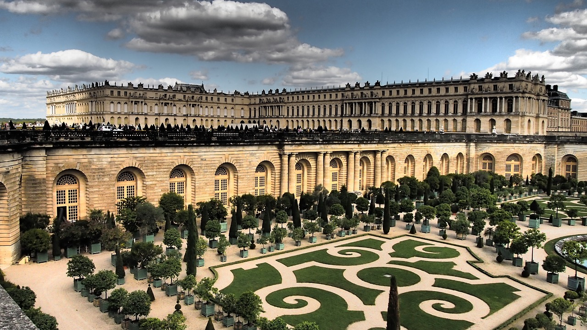
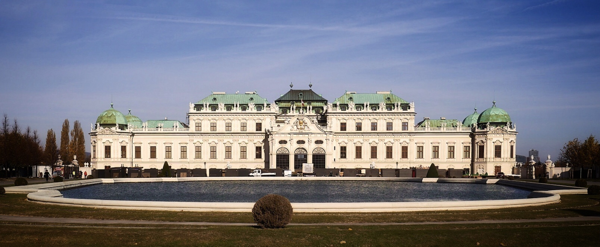

| Name | Time | Description | Example |
|---|---|---|---|
| Classic Architecture | 7th - 4th century BC | Refers to the style, predominantly used in ancient Greece and Rome. Classic Architecture is known for it's symmetry, order, proportion and perspective. Usage of materials such as marble, concrete and broken pediments were considered extremely desirable. The most remarkable building ever been built is the Parthenon, a Greek temple in Athena. |  |
| Romanesque Architecture | 1050 AD to 1170 AD | Refers to an architectural style of Medieval Europe, characterized by thick, heavy piers, narrow windows, staigned glass, semi circular arches and towers. This style of architecture is significant for its unprecedented massive scale and the introduction of vaulted roofs designed to replace fire prone wood roofs. Some of the notable examples of Romanesque Architecture are Santiago De Compostela Cathedral in Spain, St. Michael’s Church, Hildesheim, and Basilica of St. Sernin in Toulouse, France. |  |
| Gothic Architecture | 1100 AD to 1450 AD | Gothic Architecture, formerly named Opus Francigenum was discovered in the late middle ages in France. The style was influenced by Romanesque and was distinguished by its flying buttresses and pointed arches that allowed for the high vaulted ceilings that Gothic Architecture is known for. One of the most famous examples is the Notre Dame in Paris, France. |  |
| Renaissance Architecture | 1400 AD to 1600 AD | Renaissance emerged in the early 15th century in Italy, France, & England taking the inspirations from Greek and Roman ideals. This style is characterized for its perfection, focusing on symmetry, geometry, proportion, orderly arrangement of columns, formal landscaped gardens, use of arched openings, hemispherical domes, vaulted ceilings, and stone flooring. The architect known to be the father of the Renaissance is Filippo Brunelleschi with the astonishing Florence Cathedral. |  |
| Baroque Architecture | 1600 AD to 1755 AD | Baroque Architecture took a more dramatic approach to Renaissance Architecture, driven by playfulness rather than rationalism. This style of architecture portrays irregular shapes, exaggerated ornamentation, opulent paintings, and bold contrasts. The most remarkable example of the Baroque style is the Palace of Versailles in France. |  |
| NeoClassical Architecture | 1750 AD to 1920 AD | Neoclassical Architecture is the rediscovery of Classical Greek and Roman Architecture that flourished in the 18th and 19th centuries. Symmetry, elegant lines, uncluttered appearance, triangular pediments, free-standing columns, balustraded balconies, pronounced cornices, and grand-scale building distinguished this unique style of architecture. The White House in Washington, and Belvedere Palace, Vienna are some of the well-known examples of Neoclassical architecture. |  |
| Art-Deco Style | 1925 | Art-deco style is a part of the Art-deco movement that emerged in the 1920s and 30’s promoting the industrial arts, which spread quickly throughout Europe and U.S. The movement represents social and technological progress combined with the use of luxurious materials, patterns, handcrafted elements, and icons with modern technology and design. Art-Deco buildings utilize opulent materials like stucco, decorative glass, steel, terracotta, aluminum, and ceramics. This revolutionary era created iconic skyscrapers like the Chrysler Building and the Empire State Building. |
|